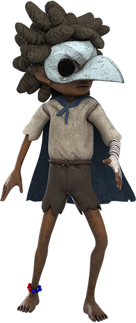

Little Nightmares's Universe
Főszereplők
Six
A sárga esőkabátos kislány, aki megpróbál elmenekülni a Gyomorból (The Maw). Állandóan éhséggel küzd, ami a történet egyik fő mozgatórugója.

Mono
A Little Nightmares II. főszereplője, aki papírzacskót visel a fején. Képes a távolban lévő tévéképernyőkön keresztül utazni.
Alone
A Little Nightmares III. főszereplője, aki papírzacskót visel a fején. Képes a távolban lévő tévéképernyőkön keresztül utazni.

Low
A Little Nightmares III. főszereplője, aki papírzacskót visel a fején. Képes a távolban lévő tévéképernyőkön keresztül utazni.
Little Nightmares I.
(Tekintsd meg!)
Little Nightmares II.

(Tekintsd meg!)
Little Nightmares III.

(Tekintsd meg!)